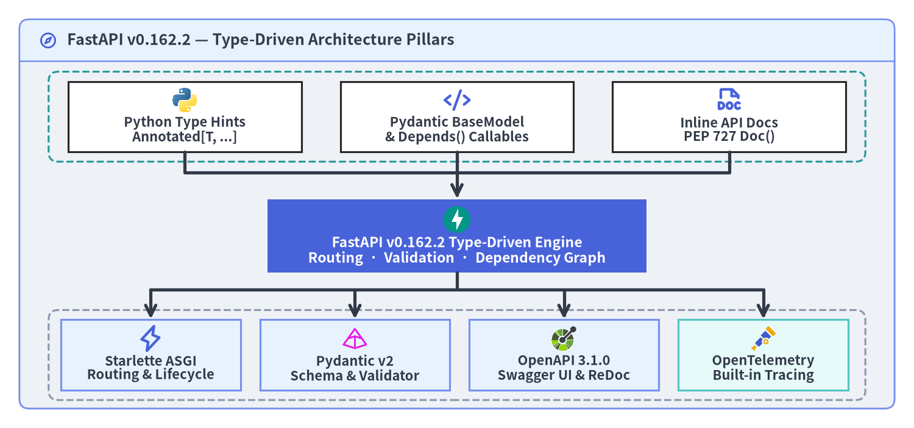
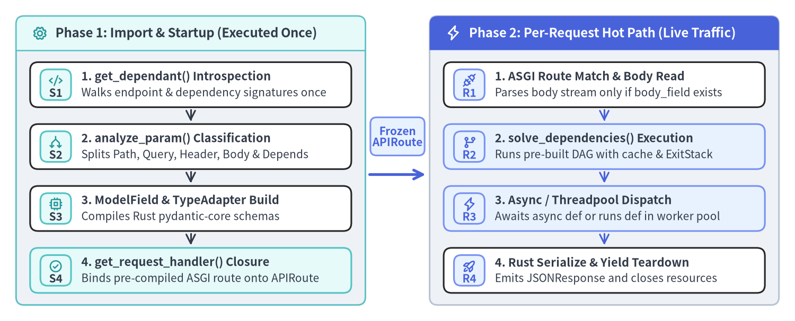

FastAPI の設計思想と内部構造
FastAPI（v0.162.2）は、「Python 標準の型アノテーションを単一の実行可能な契約（Single Executable Contract）とする」 という明快かつ強力な設計思想に基づいています。1 つの関数シグネチャから HTTP パラメータ抽出、実行時バリデーション、依存性解決、静的型検査、そして OpenAPI スキーマ合成が一貫して駆動されます。

Source Code
from drawlib.canvas import save, setup
from drawlib.diagrams.architecture import (
ArchitectureDiagram,
CnativeIcon,
CodeIcon,
Node,
PhosphorIcon,
)
from drawlib.icons import phosphor
from drawlib.lines import line, lines
from drawlib.shapes import rectangle
from drawlib.smartarts import Panel
from drawlib.styles import Styles
setup(width=188, height=88, dpi=150)
outer = Panel(
"FastAPI v0.162.2 — Declarative Type-Driven Architecture Pillars",
style=Styles.Neutral.patch(shape_r=2.0),
header_style=Styles.PrimaryNeutral.patch(shape_line_width=1.2),
text_style=Styles.DarkBold.patch(text_size=12.0),
icon=phosphor.compass,
icon_style=Styles.PrimaryBold,
header_variant="filled",
header_height=8.5,
)
outer.draw((4.0, 4.0), width=180.0, height=80.0)
# Subtle dashed bands for Top Developer Surface and Bottom Runtime Pillars
rectangle((94.0, 64.0), width=168.0, height=18.5, style=Styles.SecondaryDashed.patch(shape_r=2.0))
rectangle((94.0, 15.0), width=168.0, height=18.5, style=Styles.MutedDashed.patch(shape_r=2.0))
diag = ArchitectureDiagram(
node_style=Styles.PrimaryBold,
node_text_style=Styles.DarkBold.patch(text_size=10.5),
edge_style=Styles.DarkBold,
edge_text_style=Styles.Dark.patch(text_size=10.0),
node_card_style=Styles.White,
)
# Top Row: Python Typing Standards (centers at y=64.0, bottom edge at y=56.75)
diag.add(
Node(
"Annotated[T, ...]\nPEP 561 py.typed",
width=48,
height=14.5,
icon=CodeIcon.PYTHON,
icon_size=5.6,
),
(38, 64.0),
)
diag.add(
Node(
"typing-inspection\n>=0.4.2 AST Walk",
width=48,
height=14.5,
icon=PhosphorIcon.CODE,
icon_size=5.6,
),
(94, 64.0),
)
diag.add(
Node(
"annotated-doc >=0.0.2\nPEP 727 Doc()",
width=48,
height=14.5,
icon=PhosphorIcon.FILE_DOC,
icon_size=5.6,
),
(150, 64.0),
)
# Center Compiler Hub (y=39.5, top=47.0, bottom=32.0)
diag.add(
Node(
"FastAPI v0.162.2 Declarative ASGI Compiler\nDependant DAG · APIRoute · ModelField",
width=76,
height=15.0,
icon=CodeIcon.FASTAPI,
icon_size=6.2,
card_style=Styles.PrimaryFlat,
text_style=Styles.WhiteBold.patch(text_size=11.0),
style=Styles.WhiteBold,
),
(94, 39.5),
)
# Bottom Row: Three Core Pillars + Native Telemetry (y=15.0, top=22.25)
diag.add(
Node(
"Starlette >=0.46\nASGI Lifecycle",
width=37,
height=14.5,
icon=PhosphorIcon.LIGHTNING,
icon_size=5.6,
card_style=Styles.PrimaryNeutral,
),
(31, 15.0),
)
diag.add(
Node(
"Pydantic >=2.9\nRust pydantic-core",
width=39,
height=14.5,
icon=CodeIcon.PYDANTIC,
icon_size=5.6,
card_style=Styles.PrimaryNeutral,
),
(73, 15.0),
)
diag.add(
Node(
"OpenAPI 3.1.0\nJSON Schema 2020-12",
width=39,
height=14.5,
icon=CodeIcon.OPENAPI,
icon_size=5.6,
card_style=Styles.PrimaryNeutral,
),
(116, 15.0),
)
diag.add(
Node(
"OpenTelemetry\nAPI >=1.44",
width=35,
height=14.5,
icon=CnativeIcon.OPENTELEMETRY,
icon_size=5.6,
card_style=Styles.SecondaryNeutral,
),
(157, 15.0),
)
diag.draw()
# Symmetrical top-to-bottom bus connectors with >=5u terminal arrow segments
lines([(38.0, 56.75), (38.0, 52.5), (150.0, 52.5), (150.0, 56.75)], style=Styles.DarkBold)
line((94.0, 56.75), (94.0, 47.2), arrow_head="->", style=Styles.DarkBold)
line((94.0, 32.0), (94.0, 28.0), style=Styles.DarkBold)
line((31.0, 28.0), (157.0, 28.0), style=Styles.DarkBold)
for bx in (31.0, 73.0, 116.0, 157.0):
line((bx, 28.0), (bx, 22.4), arrow_head="->", style=Styles.DarkBold)
save()
重複コードと仕様乖離（ドリフト）の解消
従来の命令型 Web フレームワークでは、API フィールドを 1 つ追加・変更するたびに「request からの手動取得コード」「バリデータ定義」「レスポンス変換 DTO」「手動管理の OpenAPI YAML」という 4 つの成果物を同期して書き換える必要がありました。どこか 1 箇所でも更新が漏れると、本番環境で仕様と実装のサイレントな乖離（ドリフト）が発生します。
| 設計上の関心事 | 従来の命令型フレームワーク（4 箇所の二重管理） | FastAPI v0.162.2（単一シグネチャ） |
|---|---|---|
| HTTP パラメータ抽出 | request.query_params や request.json() の手動参照 |
パステンプレート・スカラ型・BaseModel から自動推論 |
| 境界での入力検証 | 別ファイルのバリデータや手続き的な if 文 |
Path(...)・Query(...) と Rust 製 pydantic-core が境界で強制 |
静的型安全性（mypy / pyright） |
型なしの dict[str, Any] がドメイン層へ流入 |
PEP 561 py.typed により絞り込まれた正確な型を関数内で保証 |
| OpenAPI 仕様書 & SDK 生成 | 手書き YAML が実装コードと乖離しやすい | OpenAPI 3.1.0 + PEP 727 Doc() 説明文として決定論的に自動合成 |
起動時 1 回コンパイルとホットパスでのリフレクション排除
「型ヒントを使うフレームワークはリクエストごとに遅い inspect.signature() を呼んでいるのではないか」と誤解されることがありますが、FastAPI は ルート登録時の 1 回限りの解析フェーズ と 事前束縛された ASGI クロージャ実行（ホットパス） を厳密に分離しています。

Source Code
from drawlib.canvas import save, setup
from drawlib.icons import phosphor
from drawlib.lines import line
from drawlib.shapes import rectangle
from drawlib.smartarts import CardList, Panel
from drawlib.styles import Styles
from drawlib.text import text
setup(width=198, height=80, dpi=150)
# Left Panel: Startup Compilation
p_start = Panel(
"Phase 1: Import & Startup (Executed Once)",
style=Styles.Neutral.patch(shape_r=2.0),
header_style=Styles.SecondaryNeutral.patch(shape_line_width=1.2),
text_style=Styles.DarkBold.patch(text_size=11.5),
icon=phosphor.gear,
icon_style=Styles.SecondaryBold,
header_variant="filled",
header_height=8.5,
)
p_start.draw((4.0, 4.0), width=87.0, height=72.0)
s_xy, s_w, s_h = p_start.get_content_box((4.0, 4.0), width=87.0, height=72.0, padding=(3.5, 3.0))
cl_start = CardList(
style=Styles.White,
text_style=Styles.DarkBold.patch(text_size=10.5),
description_style=Styles.Dark.patch(text_size=10.0),
badge_shape="rounded_rect",
badge_style=Styles.SecondaryNeutral,
badge_text_style=Styles.DarkBold.patch(text_size=10.0),
icon_style=Styles.SecondaryBold,
direction="vertical",
spacing=4.2,
show_arrows=True,
arrow_style=Styles.Dark,
)
cl_start.add(
"1. get_dependant() Introspection",
"Walks endpoint & dependency signatures once",
badge_text="S1",
icon=phosphor.code,
)
cl_start.add(
"2. analyze_param() Classification",
"Splits Path, Query, Header, Body & Depends",
badge_text="S2",
icon=phosphor.arrows_split,
)
cl_start.add(
"3. ModelField & TypeAdapter Build",
"Compiles Rust pydantic-core schemas",
badge_text="S3",
icon=phosphor.cpu,
)
cl_start.add(
"4. get_request_handler() Closure",
"Binds pre-compiled ASGI route onto APIRoute",
badge_text="S4",
icon=phosphor.check_circle,
style=Styles.SecondaryNeutral,
)
cl_start.draw(xy=s_xy, width=s_w, height=s_h)
# Handoff connector between Startup and Hot Path
line((92.0, 36.5), (106.0, 36.5), arrow_head="->", style=Styles.PrimaryBold)
rectangle((99.0, 46.0), width=13.5, height=9.5, style=Styles.PrimaryNeutral.patch(shape_r=1.5))
text((99.0, 46.0), "Frozen\nAPIRoute", style=Styles.PrimaryBold.patch(text_size=10.0))
# Right Panel: Per-Request Hot Path
p_hot = Panel(
"Phase 2: Per-Request Hot Path (Live Traffic)",
style=Styles.Neutral.patch(shape_r=2.0),
header_style=Styles.PrimaryFlat,
text_style=Styles.WhiteBold.patch(text_size=11.5),
icon=phosphor.lightning,
icon_style=Styles.WhiteBold,
header_variant="filled",
header_height=8.5,
)
p_hot.draw((107.0, 4.0), width=87.0, height=72.0)
h_xy, h_w, h_h = p_hot.get_content_box((107.0, 4.0), width=87.0, height=72.0, padding=(3.5, 3.0))
cl_hot = CardList(
style=Styles.White,
text_style=Styles.DarkBold.patch(text_size=10.5),
description_style=Styles.Dark.patch(text_size=10.0),
badge_shape="rounded_rect",
badge_style=Styles.PrimaryNeutral,
badge_text_style=Styles.PrimaryBold.patch(text_size=10.0),
icon_style=Styles.PrimaryBold,
direction="vertical",
spacing=4.2,
show_arrows=True,
arrow_style=Styles.Primary,
)
cl_hot.add(
"1. ASGI Route Match & Body Read",
"Parses body stream only if body_field exists",
badge_text="R1",
icon=phosphor.plugs,
)
cl_hot.add(
"2. solve_dependencies() Execution",
"Runs pre-built DAG with cache & ExitStack",
badge_text="R2",
icon=phosphor.git_branch,
style=Styles.PrimaryNeutral,
)
cl_hot.add(
"3. Async / Threadpool Dispatch",
"Awaits async def or runs def in worker pool",
badge_text="R3",
icon=phosphor.lightning,
style=Styles.PrimaryNeutral,
)
cl_hot.add(
"4. Rust Serialize & Yield Teardown",
"Emits JSONResponse and closes resources",
badge_text="R4",
icon=phosphor.rocket_launch,
)
cl_hot.draw(xy=h_xy, width=h_w, height=h_h)
save()
実際にリクエストを 1 件も受け付ける前の段階で、登録済み APIRoute 上に事前コンパイルされた Dependant と ModelField を直接確認できます。
from typing import Annotated
from annotated_doc import Doc
from fastapi import FastAPI, Path, Query
from fastapi.routing import APIRoute
from pydantic import BaseModel, ConfigDict, Field
app = FastAPI(title="Compiler Inspection Demo")
class OrderPayload(BaseModel):
model_config = ConfigDict(extra="forbid")
sku: str = Field(min_length=3)
quantity: int = Field(ge=1, le=100)
@app.post("/orders/{order_id}")
async def create_order(
order_id: Annotated[int, Path(ge=1), Doc("Numeric order identifier.")],
payload: OrderPayload,
dry_run: Annotated[bool, Query(), Doc("Validate without persisting.")] = False,
) -> dict[str, object]:
return {"order_id": order_id, "sku": payload.sku, "dry_run": dry_run}
route = next(r for r in app.routes if isinstance(r, APIRoute) and r.path == "/orders/{order_id}")
assert [p.name for p in route.dependant.path_params] == ["order_id"]
assert [q.name for q in route.dependant.query_params] == ["dry_run"]
assert [b.name for b in route.dependant.body_params] == ["payload"]
assert route.body_field is not None
6 つの実行時依存パッケージと 5 層内部アーキテクチャ
コア実行時依存スタック
FastAPI は必須ランタイム依存を意図的に最小限へ絞り込んでおり、pyproject.toml に宣言された直接依存パッケージはわずか 6 つ です。
パッケージ（pyproject.toml） |
最小バージョン | FastAPI v0.162.2 における役割 |
|---|---|---|
starlette |
>=0.46.0 |
高速な ASGI 3.0 基盤、URL ルータ、Request/Response プリミティブ、WebSocket、ミドルウェア群 |
pydantic |
>=2.9.0 |
Rust 製 pydantic-core の TypeAdapter による高速入力検証・型変換・直列化・JSON Schema 2020-12 生成 |
typing-extensions |
>=4.8.0 |
Python 3.10 ～ 3.14 間での最新型ヒント機能の互換性維持 |
typing-inspection |
>=0.4.2 |
Annotated[...]・型エイリアス・ジェネリクス・Union 型の決定論的な起動時展開 |
annotated-doc |
>=0.0.2 |
PEP 727 Doc("...") による Annotated 内インライン OpenAPI ドキュメント記述 |
opentelemetry-api |
>=1.44.0 |
SDK 未導入時にはゼロオーバーヘッドで動作する fastapi.telemetry 向け標準トレーシング API |
5 層内部モジュールアーキテクチャ（全 52 モジュール）
全 52 ソースファイル（19,837 行）にわたって、FastAPI は上位から下位への規律ある 5 層構造を形成しています。
| レイヤ | 内部責務 | 代表的なアップストリームモジュール |
|---|---|---|
| Tier 5 — 公開ファサード層 | FastAPI 本体、PEP 727 付きパラメータ関数（Query, Path, Depends）、CLI エントリ、TestClient |
fastapi/applications.py, fastapi/param_functions.py, fastapi/testclient.py |
| Tier 4 — ルーティング・SSE・OpenAPI 層 | APIRouter、APIRoute ハンドラ合成、ネイティブ EventSourceResponse、OpenAPI 3.1.0 / Swagger UI / ReDoc |
fastapi/routing.py, fastapi/sse.py, fastapi/openapi/utils.py, fastapi/openapi/docs.py |
| Tier 3 — 再帰的 DI・セキュリティ層 | Dependant DAG 構築（get_dependant）、非同期解決（solve_dependencies）、OAuth2 / APIKey / HTTP 認証 |
fastapi/dependencies/utils.py, fastapi/dependencies/models.py, fastapi/security/oauth2.py |
| Tier 2 — ミドルウェア・並行制御・OTel 層 | AsyncExitStackMiddleware、同期 contextmanager_in_threadpool、CORS/GZip ラッパ、NativeTelemetry |
fastapi/middleware/asyncexitstack.py, fastapi/concurrency.py, fastapi/telemetry/_asgi.py |
| Tier 1 — Pydantic v2 アダプタ・記述子層 | Pydantic v2 TypeAdapter を包む ModelField、FieldInfo 派生クラス（Path, Query, Body）、jsonable_encoder |
fastapi/_compat/v2.py, fastapi/params.py, fastapi/encoders.py, fastapi/exceptions.py |
次のステップとして、クイックスタートと自動生成 Docs で実際に API を立ち上げるか、第 2 章：境界づけられたコンテキストと階層化 で大規模コードベースの構造化パターンを確認してください。